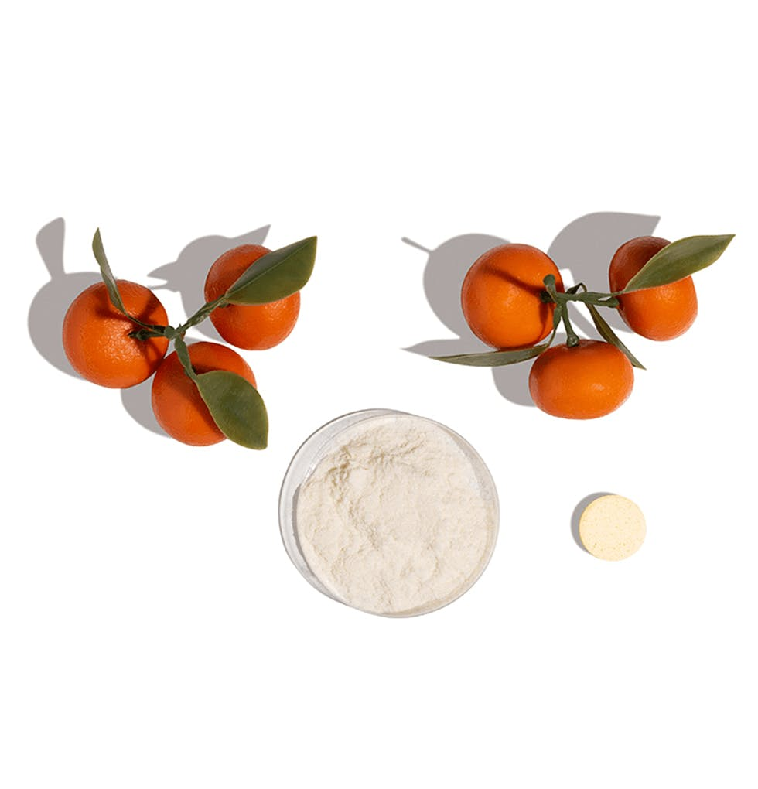

Dark Spots & Dull Skin
Brighten
Brighten uses vitamin C and boldo tree bark to help improve the appearance of pigmentation and reveal a more luminous complexion.
- Reduces the appearance of hyperpigmentation
- Rejuvenates the skin
- Helps unify uneven-looking tone
Key ingredientsVitamin C · Kojic Acid · Carrot Extract
Skin concernsDark spots & acne scars · Uneven tone · Dull skin